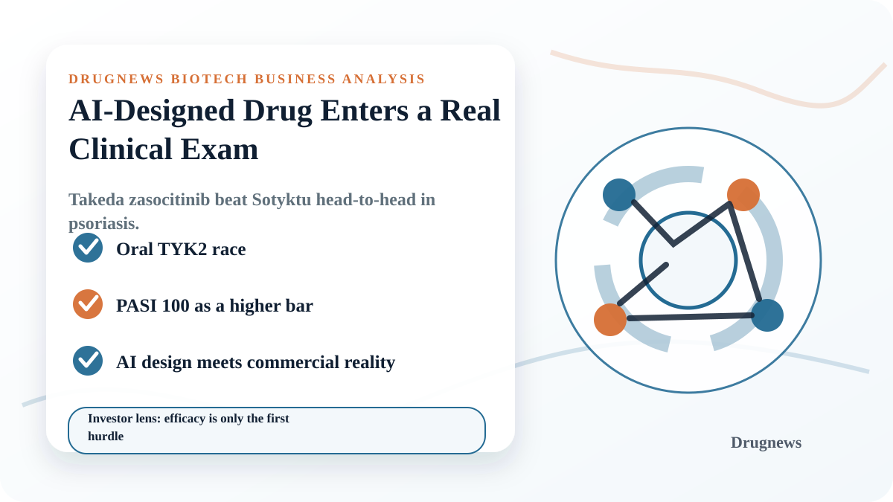
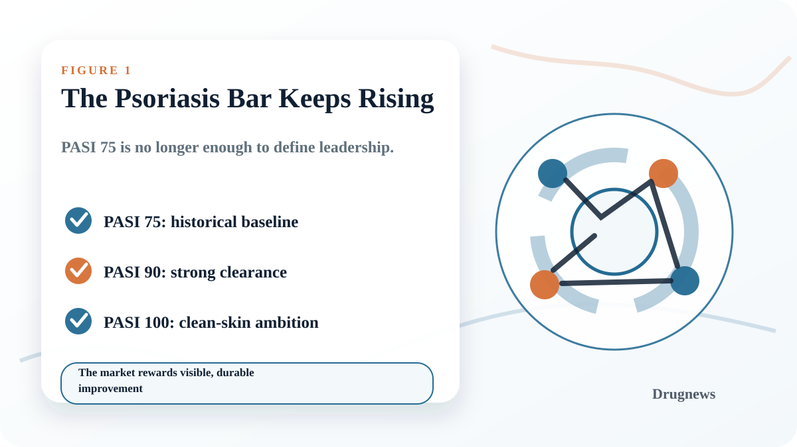
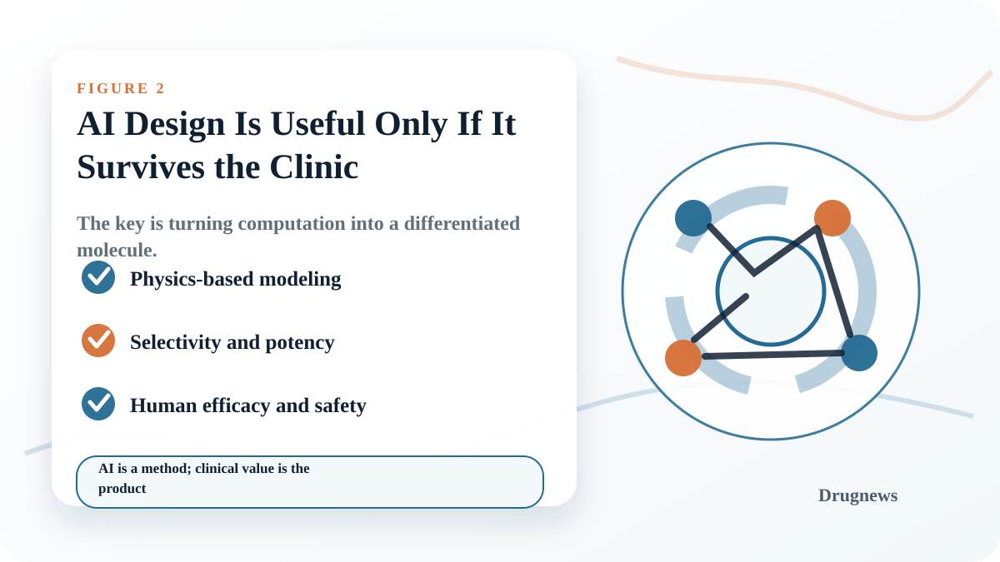
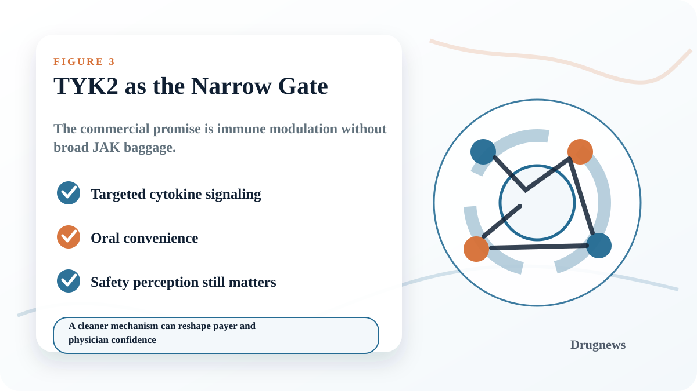
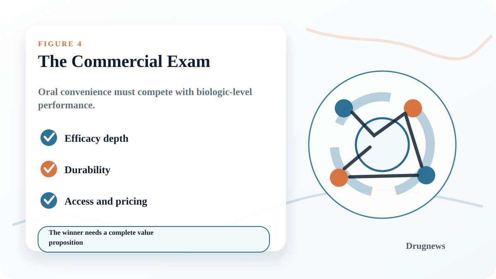
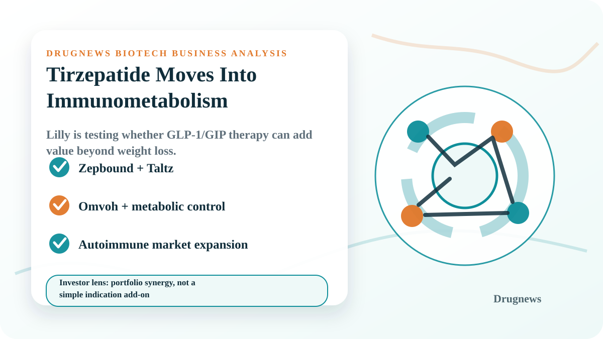

For years, AI drug discovery has produced beautiful slides and ambitious claims. The market has been waiting for something more concrete: a molecule that survives real clinical competition.
Share this analysis
Send this article to readers who follow biotech, company strategy, and capital-market signals.
Takeda's zasocitinib is now entering that exam. In a Phase 3 psoriasis study, the oral TYK2 inhibitor showed superiority over Sotyktu in a head-to-head comparison. That does not automatically make it a blockbuster, but it does make the asset one of the clearest tests of whether AI-assisted design can translate into clinical and commercial value.

1. In psoriasis, the bar has moved higher
The old benchmark in psoriasis was PASI 75. That meant a 75% improvement in disease severity. Today, leading biologics have pushed expectations toward PASI 90 and PASI 100.
For patients, "almost clear" and "clear" are very different experiences. For physicians and payers, deeper and durable clearance changes how a product is positioned. That is why oral convenience alone is no longer enough.

2. Why zasocitinib matters for AI drug discovery
Zasocitinib is tied to Schrödinger's computational drug-discovery platform. The important point is not that software was used. Modern drug development uses computation everywhere. The important point is whether the design process produced a molecule with differentiated potency, selectivity, and clinical performance.
If an AI-enabled asset can beat an established oral competitor in a direct trial, investors will have a stronger reason to treat AI drug discovery as a productivity tool rather than a marketing slogan.

3. TYK2 is the narrow gate after JAK risk
The TYK2 story is attractive because it promises more targeted immune modulation than broad JAK inhibition. In plain language, the market wants oral drugs that can reduce inflammatory signaling without carrying the same level of safety concern that hurt parts of the JAK category.
That is the strategic opening for Sotyktu, zasocitinib, and other next-generation oral immune assets.

4. Sotyktu teaches an important commercial lesson
Sotyktu proved that oral TYK2 inhibition could become a real psoriasis product. But it also showed that oral convenience does not automatically defeat biologics.
If an oral drug wants to take meaningful share, it needs a complete package: strong efficacy, clean safety perception, easy access, durable response, and a credible reason for physicians to switch or start patients earlier.
5. Biologics remain a high wall
Products such as Skyrizi, Tremfya, Cosentyx, and other biologics have changed the standard of care. Their efficacy is strong, physician familiarity is high, and payers understand the category.
That means zasocitinib is not competing against an empty market. It is competing against a mature biologic ecosystem.
6. The oral psoriasis race is becoming more serious
Zasocitinib is not alone. The next competitive phase may include multiple oral immune assets, each trying to balance efficacy, safety, convenience, and pricing.
The commercial winner will not be the product with the most exciting headline. It will be the product that gives physicians a simple clinical reason to prescribe and gives payers a clear economic reason to reimburse.

7. The market could extend beyond psoriasis
If the mechanism proves durable and safe, TYK2 assets may move into other immune-inflammatory indications. That is where platform value can appear. A single successful psoriasis trial can become the first proof point for a broader inflammatory-disease strategy.
This is why investors should track both the first label and the expansion path.
8. Taiwan angle
For Taiwan biotech investors, the lesson is not simply "AI is useful." The lesson is that AI only matters when it changes a product's clinical and commercial probability.
Companies claiming AI-enabled discovery still need to answer traditional biotech questions: What is the mechanism? What is the endpoint? What is the competitor? What is the payer logic? What is the expansion path?
Bottom line
Zasocitinib is important because it brings AI drug discovery into a more serious arena: head-to-head clinical competition. The first win is meaningful. The larger question is whether Takeda can turn that clinical signal into a durable commercial franchise.
References
- Takeda. Phase 3 data release for zasocitinib in psoriasis.
- Schrödinger. Zasocitinib / TAK-279 case materials.
- Bristol Myers Squibb. Sotyktu prescribing information.
- Reuters. Coverage of oral psoriasis drugs and the TYK2 competitive landscape.
- Takeda. Pipeline and inflammatory disease strategy materials.
This article is intended for industry research and knowledge sharing only. It does not constitute investment, medical, fundraising, or individual stock advice.
Cite this article
For decks, research notes, or media references, cite Drugnews with the canonical article URL.
Drugnews Editorial Team. "Is the First AI-Designed Drug Finally Arriving? Takeda's Zasocitinib Beats Sotyktu Head-to-Head." Drugnews, Jun 24, 2026. https://drugnews.com.tw/articles/2026-06-24-ai-zasocitinib-sotyktu-en.html
Original Article
Further Research
For deeper company research, industry context, and biotech capital-market notes, follow Drugnews paid research on Vocus.
Read This Next
Continue with the most relevant Drugnews analysis on the same theme.

Where Does AI Drug Discovery Stand Now? A Pipeline-Based Reality Check
AI drug discovery has moved beyond the concept stage and into clinical validation. This article reviews Zasocitinib, GB-0895, Zovegalisib, and REC-4881 to examine how different AI strategies are being converted into real drug assets.

The Race for the Third Obesity-Drug Giant: Who Comes After Lilly and Novo Nordisk?
Lilly and Novo Nordisk dominate the first phase of the obesity-drug market. The next investment question is who can become the third major player by solving the problems GLP-1 leaders have not fully solved.

Tirzepatide Enters Autoimmune Disease: Is Immunometabolism Lilly's Next Expansion Path?
Lilly is testing whether tirzepatide can move beyond weight loss and become part of an immunometabolism strategy for chronic immune-inflammatory diseases.